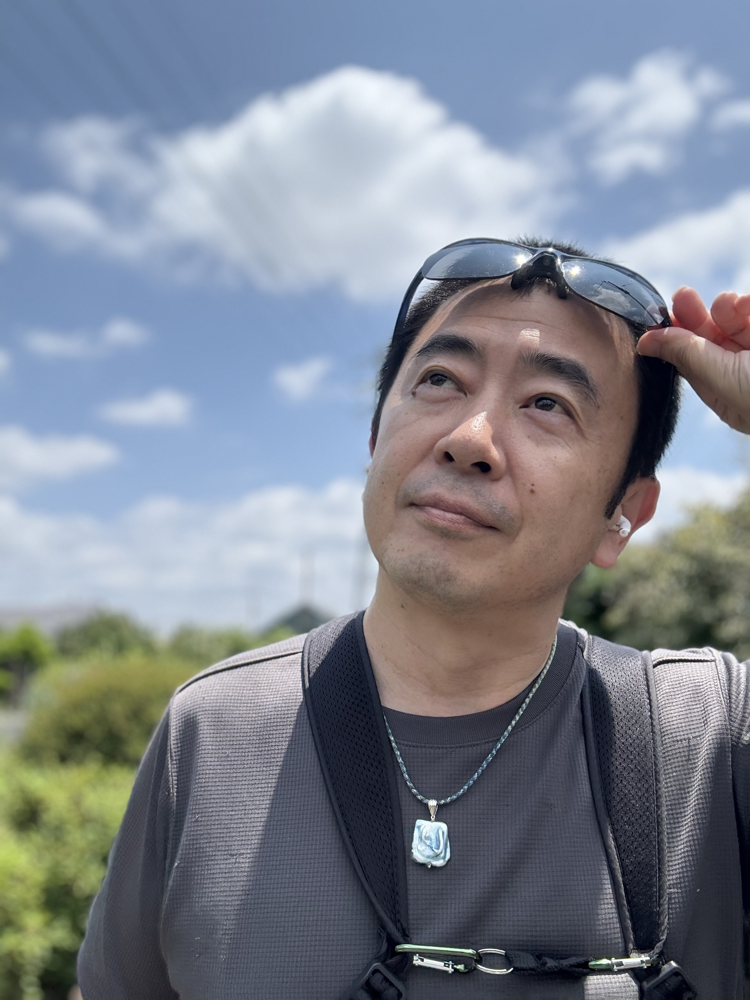

代表について
現場を見てきて、そう確信するようになりました。
頑張っているのに、なぜか空回りしている。
良い会社なのに、力を出しきれていない。
そういう現場をなんとかしたくて、この仕事を続けています。
山田 建太郎
株式会社 業務の改善 代表取締役
現場で見てきたこと
関わってきた現場で、よく見る光景があります。
「改善したい」という気持ちはある。
社員も頑張っている。
いいサービスも、技術も、人もいる。
でも、なぜか成果につながらない。
よく見ると、忙しすぎて改善する余力がない。
何かを変えようとしても、どこから手をつければいいか分からない。
ツールを入れてみたけれど、現場に定着しない。
「悪い会社」ではないんです。
むしろ、真面目に取り組んでいる会社ほど、そうなりやすい。
本来持っているはずの力が、うまく発揮できていない状態。
そこに手を入れることが、私の仕事だと思っています。
なぜこの仕事を
今の考え方になるまでに、いくつかの経験がありました。
最初の仕事
DTP・Web制作・デザイン
キャリアの出発点は、「つくる」仕事でした。 チラシ、Webサイト、印刷物。 伝えたいことが相手に届いたときの手応えを、この時期に知りました。
転機
システム開発会社 COO
開発会社の経営側に立ったとき、いつの間にか現場が疲弊していました。 「便利なものをつくれば使ってもらえる」は幻想で、 現場に根付かないシステムに意味はない——そう気づいたのはこの時期です。 「どう作るか」よりも「何のために作るか」を問うようになりました。
現場との向き合い方
業務改善・DX支援・地域活性化
立場を変えて、現場支援に入るようになりました。 中小企業、地域の事業者、行政との連携プロジェクト。 業種も規模もバラバラでしたが、どこも共通していたのは 「ツールではなく、使える状態をつくることが大事」ということでした。 手段を目的にしない。それが今のスタイルの出発点です。
ITを売りたいわけではない。
本来の力を発揮できる状態を、作りたい。
改善のスタイル
「まず大きな投資を」という話になりがちですが、
私はそのやり方をあまり勧めません。
うまくいかなかった現場を、何度も見てきたからです。
まず動くものを試す
大規模開発の前に小さく動かして、効果を確かめる。 失敗しても、やり直しが利く規模でやる。
ROIが見えてから拡張
投資対効果を一緒に確認してから、次のステップへ。 「なんとなく入れる」はしない。
ITは手段であって目的でない
テクノロジーが先行すると、現場はついてこない。 業務の流れと目的を先に整理する。
「作らない」選択肢もある
「それ、システムじゃなくていいかもしれません」と言えることも、 この仕事の大事な部分だと思っています。
大事なのは、現場が「使える」状態になること。
そこに向けて、一緒に考えながら進めます。
中小企業への想い
関わってきた中小企業には、「いい会社」が多かった。
お客さんを大切にしている。
現場の人たちが誠実に働いている。
長年積み上げてきた技術や知見がある。
でも規模が小さいから、リソースが足りない。
専門家を雇う余裕もない。
「改善したいけど、どこに相談すればいいか分からない」という状況に、なりやすい。
そういう会社が、もっと成果を出せるようになったら、
日本全体がもう少し元気になると思っています。
だから、本気で改善したいと思っている会社を、
本気で支援したい。
そういう気持ちで、この仕事をしています。
難しいことを言いたいわけではありません。
現場が動きやすくなる。
本来やるべき仕事に集中できる。
少しずつ、成果が出てくる。
そういう変化を、一緒につくっていきたいと思っています。
山田 建太郎
株式会社 業務の改善 代表取締役
会社概要
| 会社名 | 株式会社 業務の改善 |
| 代表者 | 山田 建太郎 |
| 設立 | 2022年（令和4年）1月11日 |
| 所在地 |
〒780-0870 高知県高知市本町二丁目2番31号 BASE CAMP IN OHASHIDORI ※代表は東京都を拠点に活動しています。 なぜ高知に会社を置いているのか |
| 事業内容 |
業務改善支援 / DX推進支援 ITシステム導入・活用支援 組織運用改善 |